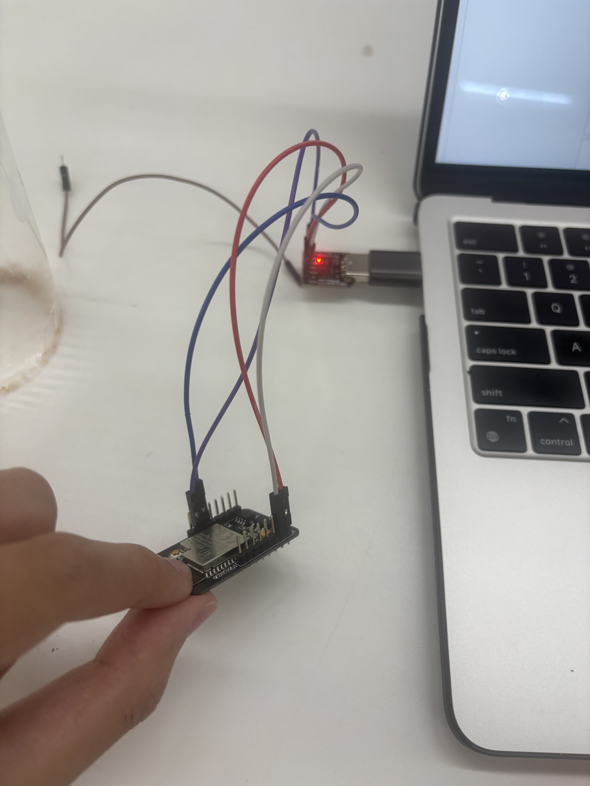
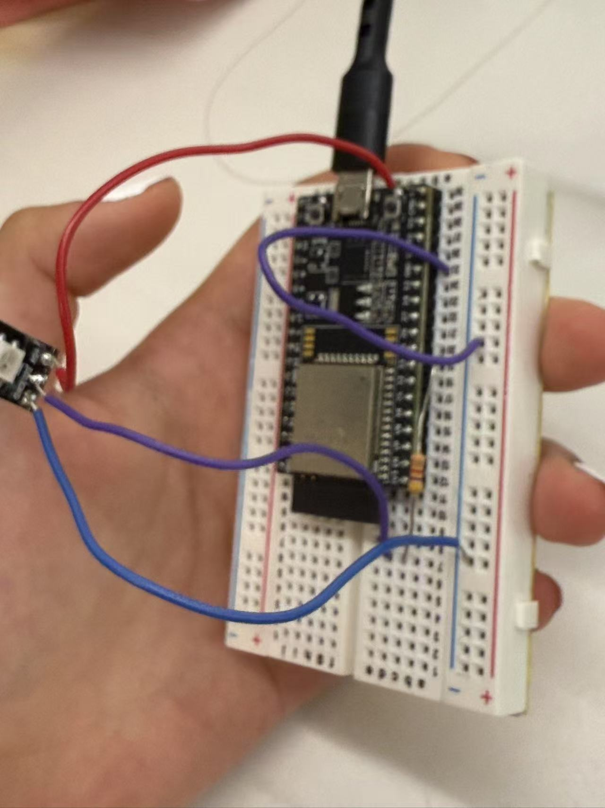

<div class="textcontainer">
<p class="margin"> </p>
<h3>Week 9: Radio, WiFi, Bluetooth (IoT)</h3>
<h2><b><i><u>Nightlight (LED control with black/white) </h2></u></i></b></h3>
<p class="margin"> </p>
<h4> For our project this time, we found a lot of roadblocks. The essential function of the final product is a nightlight -- once the ESP cam detects a certain value above the grayscale treshold, the light will turn off, and vice versa. Therefore, when you hold a black object over it, the led will turn on and when you hold a white object, the led will turn off. There's a bit of a delay. </h4>
<video width="400" height="400" controls>
<source src="working.MOV" type="video/mp4"> </video>
<p class="margin"> </p>
<h2><b><i><u>Wiring</h2></u></i></b></h3>
<h4> To do this, we first wired up our esp cam to my computer. To do this, we connected the camera to a FTDI programmer. We connected GND and GND, 5V to 5V, TXD to U0R and RXD to U0T. We also had to connect GND to IO0 everytime we wanted to start the code. Also, in order to actually connect to wifi, we had to press the reset button everytime we wanted to connect, which was extremely tedious.
<p class="margin"> </p>

<p class="margin"> </p>
<h4> For the esp, we simply hooked up an LED with a resistor to a breadboard. </h4>
<p class="margin"> </p>

<p class="margin"> </p>
<h2><b><i><u>Coding</h2></u></i></b></h3>
<p class="margin"> </p>
<h4>For the coding, it was a lot of trial and error. First, we utilized the ESP camera exmaple to get the camera working. We managed to find the link it provided:
<p class="margin"> </p>
<video width="400" height="400" controls>
<source src="espcamworking.MOV" type="video/mp4"> </video>
<p class="margin"> </p>
<p class="margin"> </p>
<h4> After getting it to work, our next idea was to use it as a color sensor. Our original idea was to have the camera detect red, blue, and green objects. We tinkered with it for hours, but it didn't work no matter how hard we tried due to major inconsistencies with the colors and the ways to detect them. We did get it to detect the colors at one point though:
</h4>
<video width="400" height="400" controls>
<source src="colorsworking.MOV" type="video/mp4"> </video>
<p class="margin"> </p>
<h6><b> basically, the green values would go up when its green, etc. </b></h6>
<p class="margin"> </p>
<h4> After scrapping the RGB idea, we decided to focus on something a little simpler. We decided to utilize the camera as a grayscale detector instead-- the code takes pictures every second, and processes the pixels on the picture. It takes the average of all the pixels to find the general brightness of the photo. (The idea was ours but chatgpt assisted us with coding it). We then used wifi to connect the cam and esp32 for the LED to light up (using the same IP address). Overall, it worked in the end and manages to detect black and white. </h4>
<p class="margin"> </p>
<div class="flexrow">
<a id="btn" href="FINAL CODE(sender).pdf" download>Download the code here:
</a>
</div>
<p class="margin"> </p>
</div>